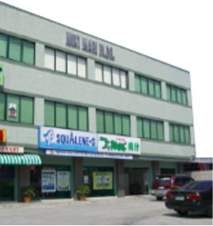
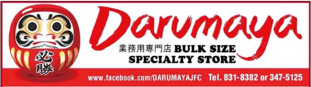

>Company Info
Message from the President
Since our founding in 1977, we have aimed to contribute to the development of the Philippine people and society, and the realization of a brilliant future through the provision of Japanese health foods and foods.
In the Philippines, it is natural for Japanese health foods to line up in drugstores, making it possible for a Japanese restaurant to be queued. As a result of changes in the economic environment and rising health consciousness, the interest and demand for Japanese food culture further increases and continues. In addition, the consumption style has been diversified from time to time every day, showing not only to real stores but also to the net little by little. We will continue to supply the deliciousness and satisfaction of Japanese cuisine as a wholesale distribution business, continue to constantly challenge the creation of new demand, growing as a mission to become a bridge to Japan and the people of the Philippines and the future of food.
I would like to ask for continued suppport and patronage in the future. I humbly thank you.
Company Profile
Company name
Yamato Enterprises, Inc.Address
Miki Mari Bldg. Sta. Cecilia Rd, Talon Dos, Las Pinas City, PhilippinesRepresentative
Isamu Akasako President & General ManagerEstablish date
April 18, 1977Capital
PHP 900,000.00Number of Employees
32Annual sales
730 million yen (Fiscal 2015 results)Major banks
BANCO DE ORO, METRO BANK, BANK OF THE PHILIPPINESMain suppliers
Yoshikawa Shoji Co., Ltd., DIC Corporation, Sankyo Co., Ltd., etc.Major distributors
2,600 pharmacy chain stores in the Philippines, many Japanese hotels and restaurantsDistribution base
Two places in Yokohama and Kobe

Yamatoグループ本社
Company History
- 1976
Opened a Japanese restaurant "Fujiyama", opened six stores in the following 4 years
- 1977
Established Yamato Enterprises, Inc.
- 1978Started production and export of deep-sea shark liver oil. Major export destinations: Nippon Petrochemical Co., Ltd.
- 1980Start importing and selling deep sea shark liver oil health food
"Squalene" - 1985Started importing and selling health food "Spirulina" etc. by signing agency agreement of health food in Dai Nippon Ink Chemical Co., Ltd. (now DIC Co., Ltd.) in the Philippines
- 1996Import and sale of Japanese food products, over 800 items handled Opened a Japanese grocery store "Darumaya Japanese Foods Center" in Cartimar
- 2005Focus on import and wholesale business of Japanese food and health food
- 2013Established a noodle shop. Start selling raw noodles and dumpling skin to restaurants in the Philippines
Food sector
Japanese Grocery "Darumaya"

Address Unit 5,Plaza Cartimar, Cartimar Avenue., Pasay City
Social Activities
In 2002, we cooperated with the establishment of Lampao City School of Iloilo (high school) as a social contribution activity because we wanted to give back to the Philippines. We are working on educational support with the desire to create opportunities for children to learn for their future and to become shining stars in their lives. Currently, about 1,000 children are learning.